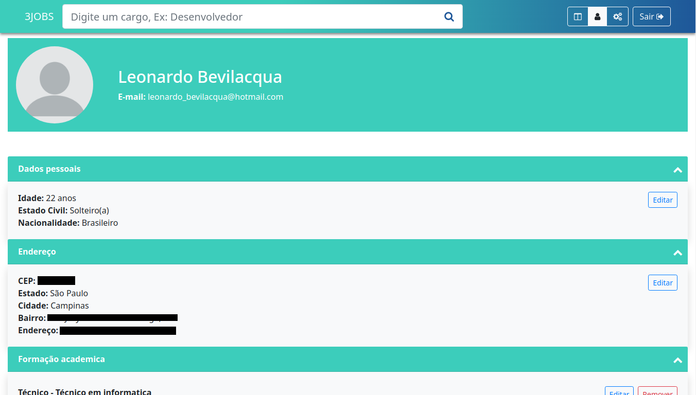
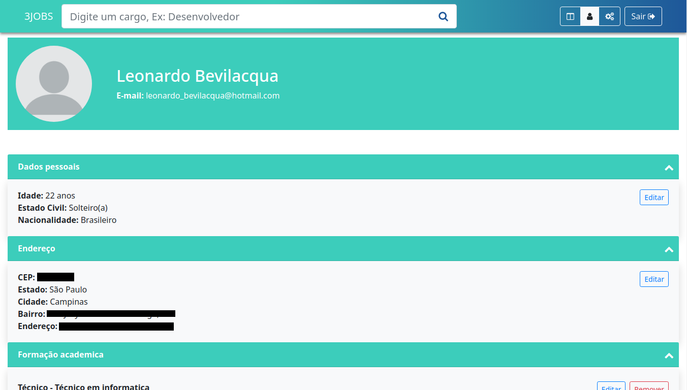

Experiências profissionais
Escola SENAI Prof. Dr. Euryclides de Jesus Zerbini
2015 - 2016Formação em técnico em informática, aprendendo sobre hardware e software, redes de computadores, programação básica em C, C++, C#, java e javacript e criação de web sites com html e css.
Recebi a premiação de aluno ouro no 2.º semestre. Premiação que ocorre a cada semestre para parabenizar o aluno que se destacou durante o semestre. Recebi a premiação de aluno destaque ao fim do curso. Premiação dada para que se mantém com notas altas e se dedicam ao máximo.
Centro Universitário UniMetrocamp Wyden
2016 - 2020Formação em ciências da computação, aprendizado sobre programação avançada, conhecimento aprofundado em sistemas operacionais e arquitetura de software.
Visio Tecnologia
maio de 2017 - março de 2019Trabalhei com diversos bancos de dados como oracle, sql server e informix e programação 4gl.
Comecei como estagiário até maio de 2018, sendo efetivado após esse período.
Instituto de Pesquisas Eldorado
abril de 2019 - atualmenteTrabalhando com tecnologias atuais no mercado, como angular, spring boot e postgresql, focando em devops.
Comecei como estagiário em abril de 2019, sendo efetivado como analista de software júnior em janeiro de 2020.
Portfólio
Replica do site Maze-Bank | GTA V
Projeto criado para praticar criação de web pages utilizando html e pré-processador de css, utilizando scss. A página se trata de uma réplica de um site dentro do jogo grand theft auto V, se tratando de uma página de banco onde o jogador tivesse a possibilidade de verificar seu saldo, sacar e depositar dinheiro dentro do jogo. O projeto se encontra disponível para navegação neste link: https://leonardobevilacqua.github.io/Maze-Bank.
 Maze bank | histórico de transações
Maze bank | histórico de transações
Lista interativa | Mini projeto CSS
Este projeto pequeno se trata de uma lista de itens, na qual existe a possibilidade de editar e excluir de forma fácil e minimalista, utilizando apenas ícones, e adicionar itens sem atualizar a pagina atual. O projeto se encontra disponível para navegação neste link: https://leonardobevilacqua.github.io/Lista-interativa/index.html
Choose Your Game | Uma rede social para gamers
Projeto do 5º semestre de CCO, com foco de criar uma aplicação web.
O projeto se trata de uma Rede social com foco em games, voltado para discussão sobre o assunto, analises e outros. Foi realizado todo o planejamento como funcionaria o site usando a ferramenta "Trello", logo após foi criado todo o front-end, disponível para visualização e interação no seguinte link: https://leonardobevilacqua.github.io/Metrocamp-Web-projeto/Template/pages, podendo clicar em "ENTRAR" e navegar nas páginas. Logo após, foi iniciado o processo de desenvolvimento, utilizando o .net core.
 Choose your game | página principal
Choose your game | página principal
 Choose your game | página de perfil
Choose your game | página de perfil
Java 2D Engine | Game development
Projeto criado para entender o funcionamento básico de uma engine, renderizando em 2D com suporte a multi jogador. A engine possui elementos baseados nas playlists do youtube de Ryan van Zeben, e CodeNMore.
Blood-clicker | Jogo educativo
Em 2019, ocorreu na faculdade UniMetrocamp a "mostra de responsabilidade social", na qual fomos incentivados a realizar a criação de um jogo para conscientizar a doação de sangue. O meu jogo foi inspirado no jogo "cookie clicker", no qual seu objetivo é juntar pontos e comprar melhorias. No jogo, a cada melhoria comprada, uma mensagem é exibida dando informações sobre doação de sangue. O jogo foi criado utilizando a Godot Engine e se encontra disponível no link: https://leonardobevilacqua.github.io/Blood-clicker/build/html/blood-clicker.html.
 Jogo blood clicker
Jogo blood clicker
3 jobs | Trabalho de conclusão de curso
3 jobs é um projeto com a intenção de ser um facilitador para candidatos e vagas de emprego. Permitindo que os headhunters encontrem, avaliem e indiquem com facilidade, ao Departamento de Recursos Humanos (RH), os candidatos que melhor se adequam à determinada vaga.
O projeto foi organizado utilizando Kaban, no qual eu fiquei responsavel em gerenciar as tarefas dos outros membros do grupo e também da criação do frontend do sistema.
 3 jobs | página inicial
3 jobs | página principal após login

3 jobs | página de perfil
3 jobs | página inicial
3 jobs | página principal após login

3 jobs | página de perfil